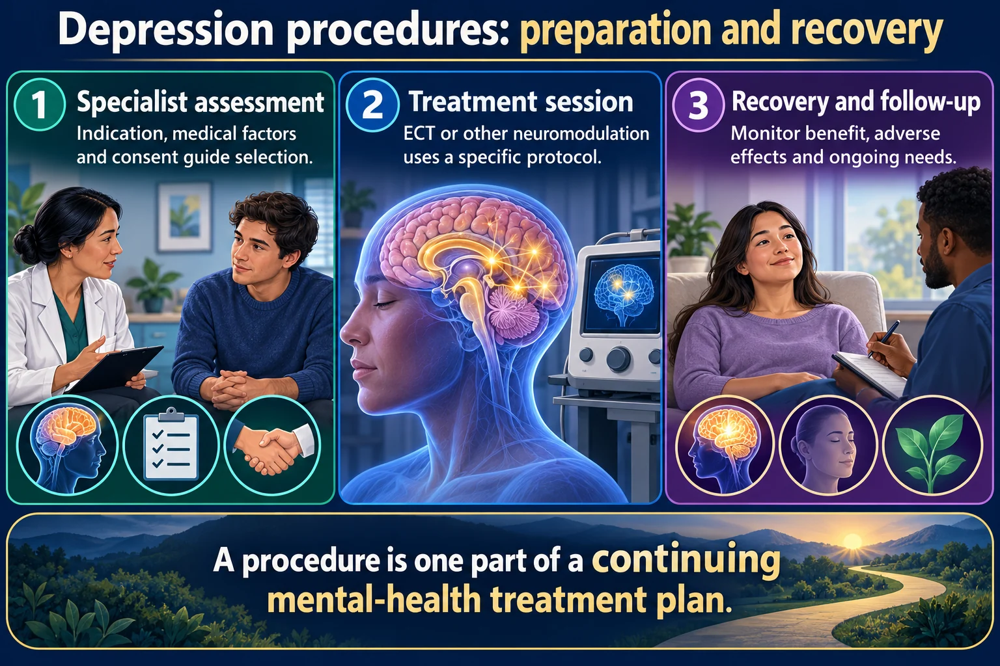

ECT · TMS · Vagus Nerve Stimulation — non-drug options for treatment-resistant depression
When medication and therapy alone haven't worked, or a client needs a fast, safe response (severe suicidality, catatonia, psychotic depression, pregnancy), the next step is a brain-stimulation procedure. ECT is the most tested — think of it as a controlled, monitored "reset" that induces a brief, therapeutic seizure.
📄 Simple Nursing original — opens in Drive →
Two procedures for the same client. Almost every exam item turns on one of the four rows highlighted in red.
| Feature | ⚡ ECT | 🧲 TMS |
|---|---|---|
| What it does | Electrical stimulus induces a brief generalized seizure | Repeated magnetic pulses to a mood-regulation area (left prefrontal cortex) |
| Anesthesia | Yes — general anesthesia + muscle relaxant | None. Client is awake and alert |
| Seizure | Induced — that is the treatment | Not induced, but a rare, serious adverse effect |
| Adverse effects | Confusion + short-term memory loss (expected, temporary) · headache · muscle aches · nausea | Scalp discomfort at the site · headache · lightheadedness · facial twitching · rarely a seizure |
| Memory | Temporary memory loss is expected — reorient and reassure | No memory loss |
| Contraindications | No absolute ones. Caution: recent MI, increased ICP, unstable aneurysm, severe cardiac disease | Ferromagnetic metal in or near the head — aneurysm clips, cochlear implants, deep-brain stimulators, shrapnel |
| Setting | Monitored procedural suite — crash cart, oxygen, suction every time | Outpatient office chair |
| Schedule | 2–3×/week, usually 6–12 treatments | 5×/week for 4–6 weeks, 20–40 min a session |
| Before it | NPO 6–8 hr · consent · void · remove dentures, contacts, jewelry, hairpins | No NPO, no prep. Remove metal jewelry; earplugs — the machine clicks loudly |
| Medications held | Anticonvulsants and benzodiazepines — they raise the seizure threshold and blunt the treatment | Nothing routinely held. Flag anything that lowers the seizure threshold |
| After it | Recovery like any anesthesia: airway, side-lying, reorient. No driving for the course | Walks out and drives home. Back to work the same day |
| Choose it when | Response is needed fast — active suicidality, catatonia, psychotic depression, refusing food and fluids, pregnancy | Depression resistant to medication when there is time and a lower-intensity option fits |
| How fast | Days — the fastest option there is | Weeks |
↔ Swipe the table sideways on a phone.
Both statements are true at once, and exams are built on the gap between them:
TMS is a magnet. A strong, rapidly changing magnetic field will heat or move ferromagnetic metal, so anything metal in or near the head rules it out:
Dental fillings and braces are generally fine — they sit far enough from the coil.
Before ECT: nothing to eat or drink for 6–8 hours, you will be asleep, you will be confused for a while afterward and that is expected, and you may not drive for the whole course.
Before TMS: you stay awake, it takes 20–40 minutes, you will hear loud clicking so you will wear earplugs, your scalp may feel sore where the coil sits, and you can drive yourself home.
ECT seizes on purpose. TMS pulses — and seizes by accident.
ECT = Anesthesia · Seizure · Memory loss
TMS = Awake · Magnet · Metal is the contraindication
Same prep as any procedure under brief general anesthesia — plus a few psych-specific holds.
ECT briefly raises intracranial pressure and stresses the cardiovascular system during the seizure, so the biggest contraindication-style concerns are:
Do not give anticonvulsant medications — e.g. valproic acid, carbamazepine — before ECT.
These drugs work by raising the seizure threshold, which fights the entire point of the treatment: ECT needs a seizure to be therapeutic.
A client with depression often has poor nutritional intake going into the procedure — assess and correct this beforehand where possible: offer high-calorie fluids/snacks earlier in the day, and let the client help select menu items when eating is allowed.
A brief, monitored, medically induced seizure — not the uncontrolled event people picture.

A procedure is one part of a continuing mental-health treatment plan.
Specialist assessment
Indication, medical factors and consent guide selection.
Treatment session
ECT or other neuromodulation uses a specific protocol.
Recovery and follow-up
Monitor benefit, adverse effects and ongoing needs.
ECT
A controlled seizure is induced under anesthesia with monitoring.
Before treatment
Follow fasting, medication, consent and anesthesia instructions.
After treatment
Assess airway, vital signs, orientation and memory-related concerns.
ECT induces electrical activity across the scalp to trigger a generalized seizure — think of it as jump-starting the brain's chemistry. Because the client is under general anesthesia with a muscle relaxant, there is no violent outward convulsing.
ECT is performed by a team including anesthesia provider + psychiatrist, typically in a monitored procedural setting (often same-day/outpatient once stable). The nurse's role during the procedure is continuous monitoring and immediate post-ictal recovery care.
Expect brief confusion and short-term memory loss — reassure, reorient, and protect until it clears.
The most important nursing action when a client wakes up confused with memory gaps is to remind the client that the memory loss is temporary — reorient to person/place/time, stay calm and simple, and reassess after the full course.
| Feature | ⚡ ECT | 🧲 TMS (transcranial magnetic stimulation) |
|---|---|---|
| Anesthesia | Yes — general anesthesia + muscle relaxant | No anesthesia needed |
| Mechanism | Electrical stimulus induces a generalized seizure | Repeated magnetic pulses stimulate a targeted mood-regulation area of the brain — no seizure induced (though a seizure is its rare adverse effect — see ECT vs TMS) |
| Memory effects | Temporary short-term memory loss/confusion is expected | Minimal to no memory effects |
| Setting | Monitored procedural/OR-style setting | Outpatient office visits, client stays awake & alert |
| Used for | Severe, treatment-resistant, or urgent depression (active suicidality, catatonia, psychosis) | Treatment-resistant depression when a lower-intensity option is appropriate |
Vagus nerve stimulation (VNS) is a third, less-common option — a surgically implanted device delivers regular electrical pulses to the vagus nerve for treatment-resistant depression; it is a longer-term implanted therapy rather than a single scheduled procedure.
These newly drawn concept diagrams consolidate the retired illustration sets. The accompanying study notes and original handout links remain on this page.